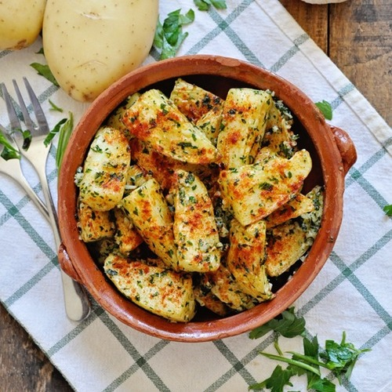

Patatas al Ajillo Cabañil

Description
Patatas al ajillo cabañil is a simple yet flavorful Murcian dish featuring tender potatoes bathed in a garlicky, vinegary sauce. A perfect tapas choice or light meal, it's a burst of Mediterranean goodness.
Ingredients
- FOR THE POTATOES:
- 2 yukon gold potatoes
- 1 tbsp extra virgin olive oil
- pinch sea salt
- pinch black pepper
- FOR THE SAUCE:
- 5 cloves garlic
- 1/4 cup freshly chopped parsley
- 2 tbsp extra virgin olive oil
- 1 tsp sweet smoked Spanish paprika
Steps
- Wash and pat dry 2 large yukon gold potatoes, cut each potato in half and then each half in half to end up with 4 evenly sized quarters, to cut the wedges cut each quarter from the top in a diagonal cut and ending it in the bottom middle, you should end up with 3 evenly sized wedges from each quarter
- Add the potato wedges into a large bowl, drizzle in a generous tablespoon of extra virgin olive oil, a generous pinch of sea salt and some freshly cracked black pepper, toss together until well combined
- Add the coated potato wedges into a baking tray lined with parchment paper, make sure they are all in a single layer, add into a preheated oven, bake + broil option 250 C - 475 F
- Meanwhile, finely mince 5 cloves of garlic and finely chop a generous handful of fresh parsley
- Heat a small fry pan with a medium heat and add 2 tablespoons of extra virgin olive oil, immediately add the minced garlic and chopped parsley and start mixing everything together, you want to cook this between 60 to 90 seconds, enough to lightly cook the garlic until it is fragrant, do not over cook, once done set the pan aside
- After roasting the potatoes for 22 to 24 minutes remove from the oven and transfer to a large bowl, add the garlic and parsley mixture to the potatoes and gently mix together until all the potato wedges are evenly coated, transfer to a shallow bowl and sprinkle the potatoes with a generous portion of sweet smoked Spanish paprika, enjoy!
Recipe taken from: Spain on a Fork
Return to main page